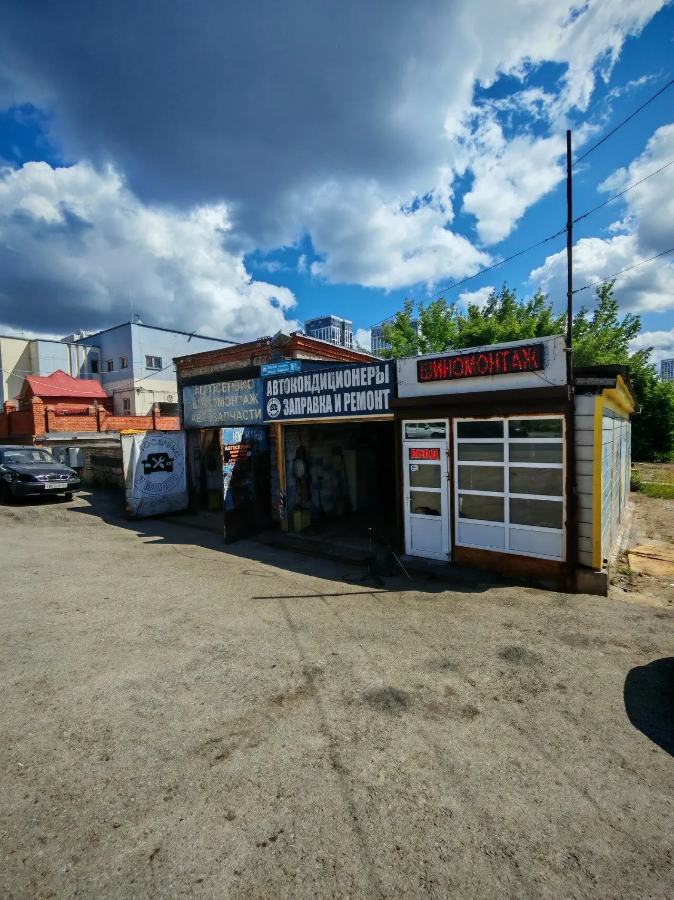
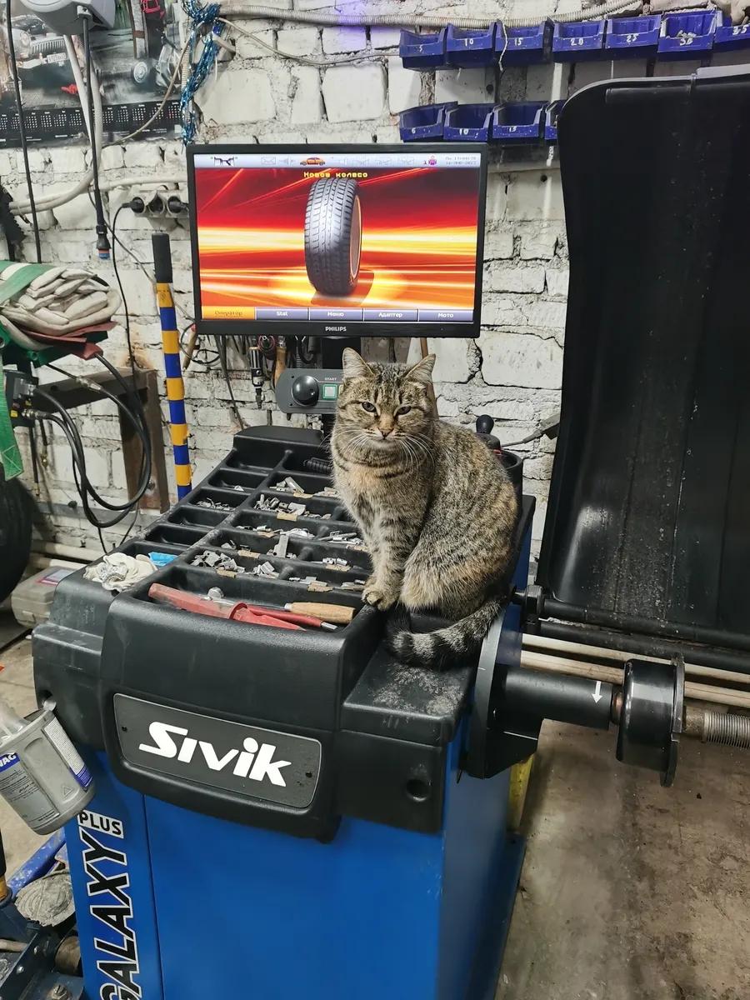
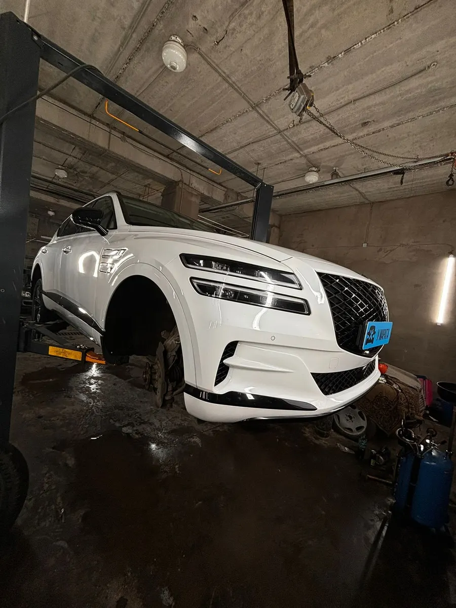
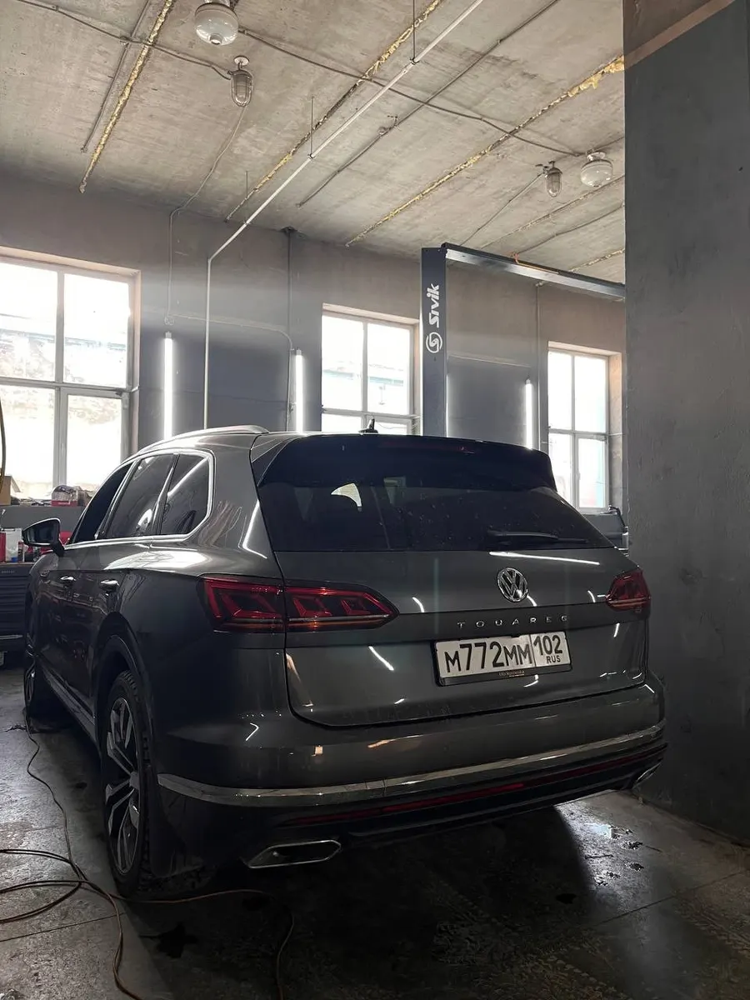

Шиномонтаж · Уфа
У Марата: шиномонтаж и мелкий ремонт авто в Уфе
Переобувка, ремонт проколов и правка дисков - выберите услугу и время, запись в одном сообщении. Стоимость назовёт мастер.
- Запись одним сообщением
- Ждём: ежедневно, 10:00–20:00
- 4,3 и 41 отзыв на Яндекс.Картах

Услуги
Стоимость называем при записи: она зависит от размера колёс, типа дисков и объёма работ.
Что можно выбрать
- Шиномонтаж и балансировкав отзывах: сняли старые шины, поставили новые, сделали балансировкууточнить
- Ремонт проколовв отзывах: проколы ремонтируют, колесо не спускаетуточнить
- Замена тормозных колодокв отзывах: поменяли колодки проезжему, когда в других сервисах отказалиуточнить
- Заправка кондиционерав отзывах: проверили систему кондиционирования, аппарат для заправки естьуточнить
Как записаться
Пишете нам
Расскажите, какая машина и что нужно сделать, или выберите услугу, день и время в форме ниже.
Уточняем детали
Администратор подтверждает время и отвечает на вопросы.
Приезжаете
Адрес: Уфа, улица Кирова, 101/1А.



Что пишут гости
Ответили сразу и переобули за полчаса
В отзыве: позвонил, быстро ответили, договорились, и через 30 минут машину «переобули».
Берутся, когда другие отказались
В отзыве: проездом через Уфу обзвонил три сервиса, колодки никто не менял, здесь поменяли.
Объясняют простыми словами
В отзыве: отличный сервис, лояльные цены, доходчиво и просто объясняют, в чём проблема.
Отзывы с Яндекс.Карт
«Ехал проездом через Уфу, обзвонил 3 сервиса никто не менял колодки! 4 был У Марата (брата), сказал приезжай поменяем. Добрался, всё ьыло качественно и быстро, даже стс записали и данные, чтобы механик зарплату получил! Доволен качеством»
Никита Б. · 8 августа 2025
«Классный шиномонтаж — я осталась в восторге! Работа выполнена быстро, мастера настоящие профессионалы своего дела: аккуратно сняли старые шины, установили новые, сделали балансировку . Все сделано настолько идеально, что чувствуешь себя спокойно за рулем. Спасибо за отличный сервис!»
М С · 2 апреля 2025
«Продиагностировал систему кондиционирования, предупредил о неисправностях, предложил варианты. Аппарат для заправки имеется.»
Айрат М. · 3 июня
Отзывы с карточки на Яндекс.Картах.
Частые вопросы
Как записаться?
Выберите услугу, день и время в форме на странице или напишите в мессенджер. Администратор подтвердит запись.
Где вы находитесь?
Уфа, улица Кирова, 101/1А. ежедневно, 10:00–20:00.
Сколько это стоит?
Стоимость называем при записи: она зависит от размера колёс, типа дисков и объёма работ.
Выберите время - подтвердим запись
- Адрес
- улица Кирова, 101/1А, Уфа
- Часы
- ежедневно, 10:00–20:00
- Телефон
- +7 (987) 485-03-03